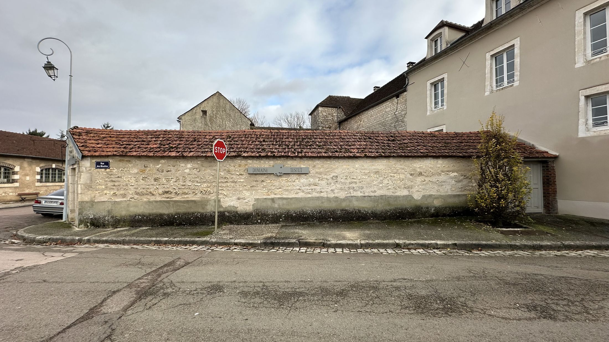
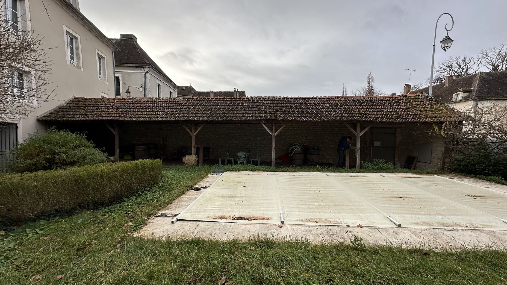
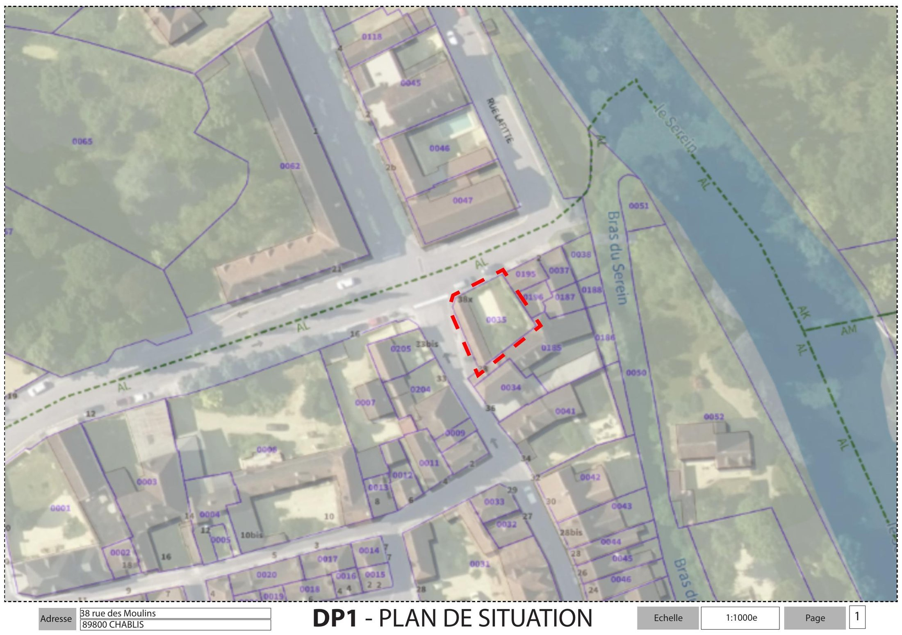
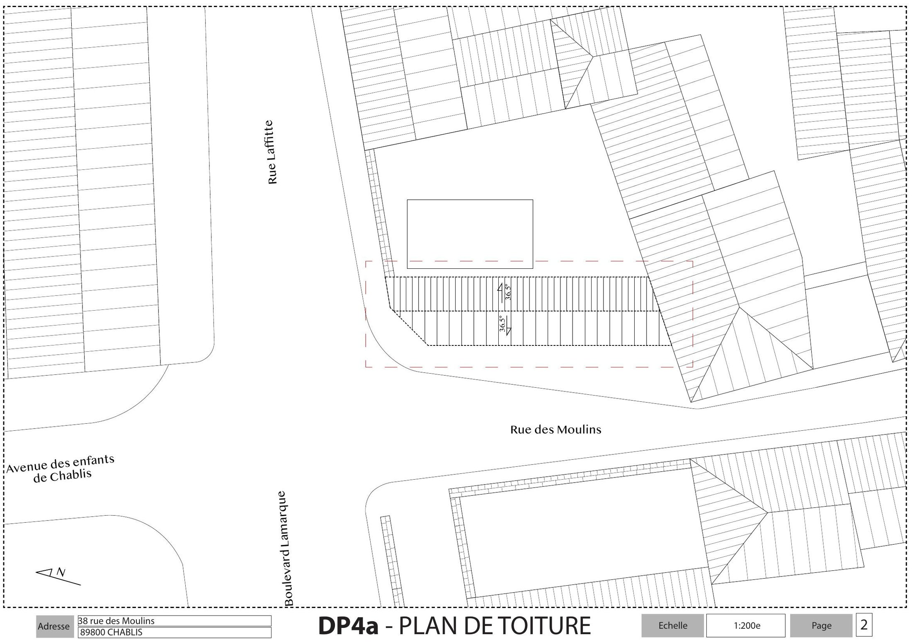
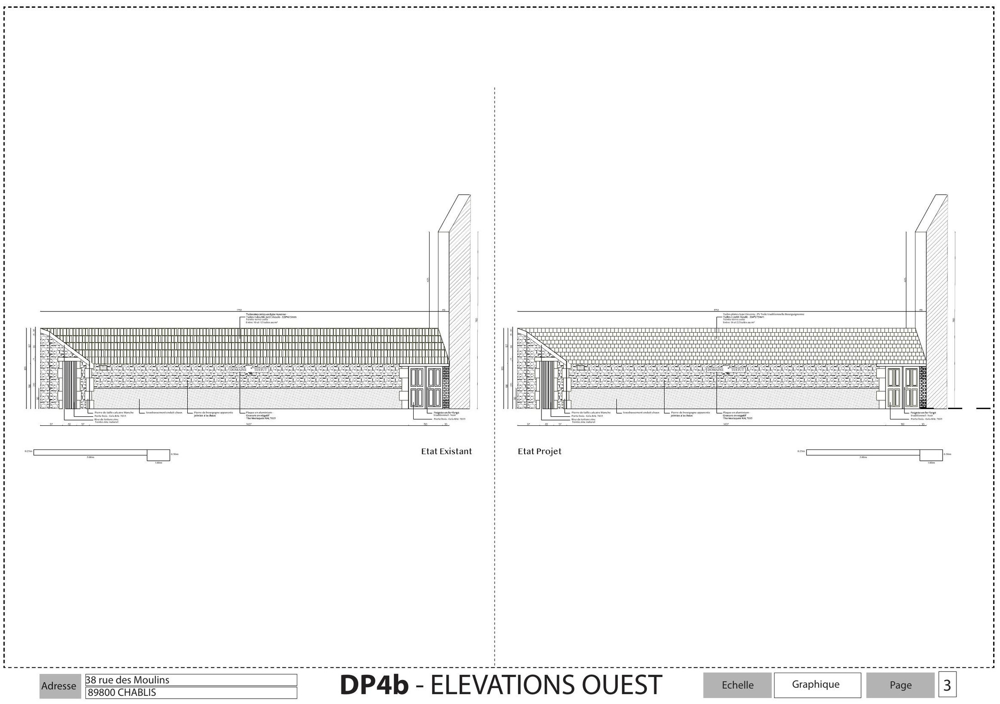
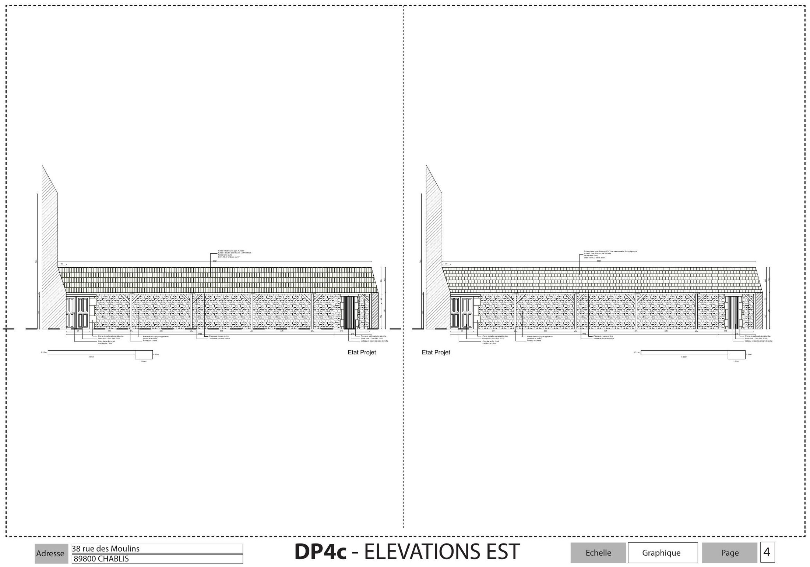
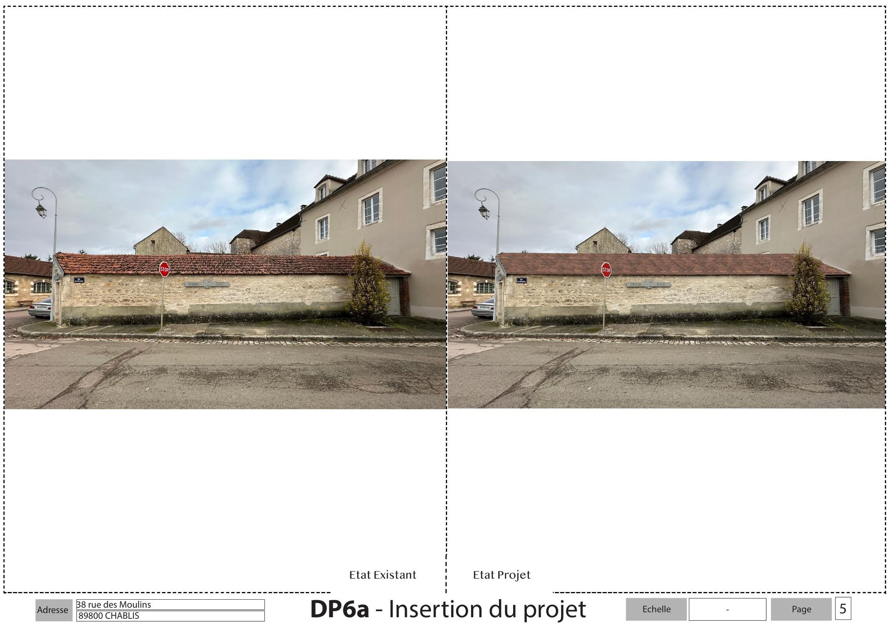
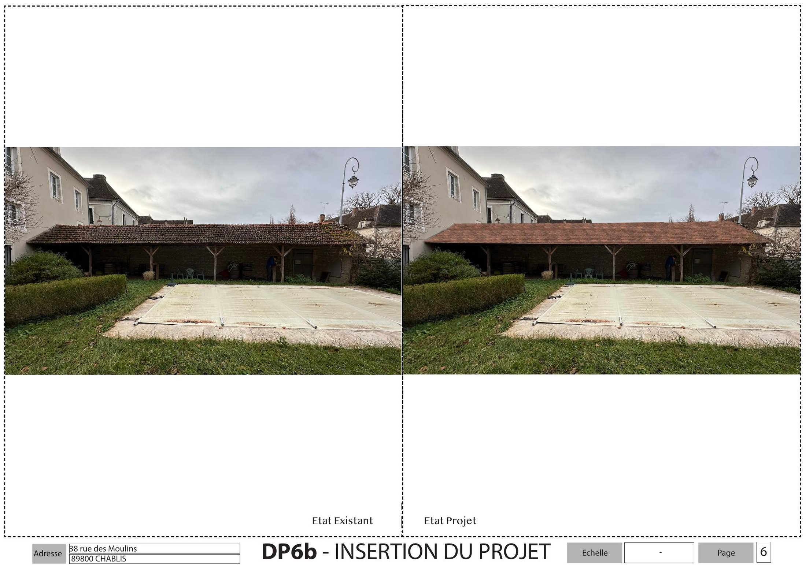

Ce dossier porte sur la réfection de la toiture d'un appentis du Domaine Testut, à Chablis. La toiture actuelle n'est plus étanche : les infiltrations menacent de pourrissement la structure secondaire de la couverture (liteaux, contre-liteaux et chevrons), aujourd'hui couverte de tuiles mécaniques à doubles petits moules.
La structure secondaire est intégralement remplacée à l'identique, en chêne. Dans un objectif d'harmonisation avec l'ensemble des bâtisses du domaine, la couverture est reprise en tuile plate traditionnelle bourguignonne (type Giverny, teinte naturelle vieillie de bourgogne), seule référence du marché adaptée à une toiture à faible pente (36,5°) sur une inclinaison de moins de 40°. Aucun changement n'est prévu en façade, ni sur les portes, ni sur le ravalement.
- Lieu
- 38 rue des Moulins, Chablis
- Année
- À préciser
- Programme
- Réfection de toiture — appentis
- Mission
- Déclaration préalable de travaux
- Surface
- Non concerné (toiture uniquement)
- Statut
- À préciser







